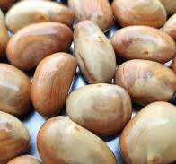

MAKANAN
Manfaat Makanan Sehat Bagi Tubuh Mempertahankan Berat Badan yang Sehat. Meningkatkan Energi dan Daya Tahan Tubuh. Memperkuat Sistem Kekebalan Tubuh. Meningkatkan Kualitas Tidur. Membentuk Kebiasaan Makan Sehat Sejak Dini. Meningkatkan Kualitas Hidup Keluarga. Menjaga Berat Badan Anak yang Sehat
KACANG
Kacang mengandung serat larut dan tidak larut. Sehingga, mereka bekerja ganda untuk menjaga sistem pencernaan anda berjalan lancar. Yang pertama melambat pencernaan, yang memberi Anda perasaan penuh dan yang kedua membantu mencegah sembelit..
Buah Buahan
Biji Bijian
0811111111